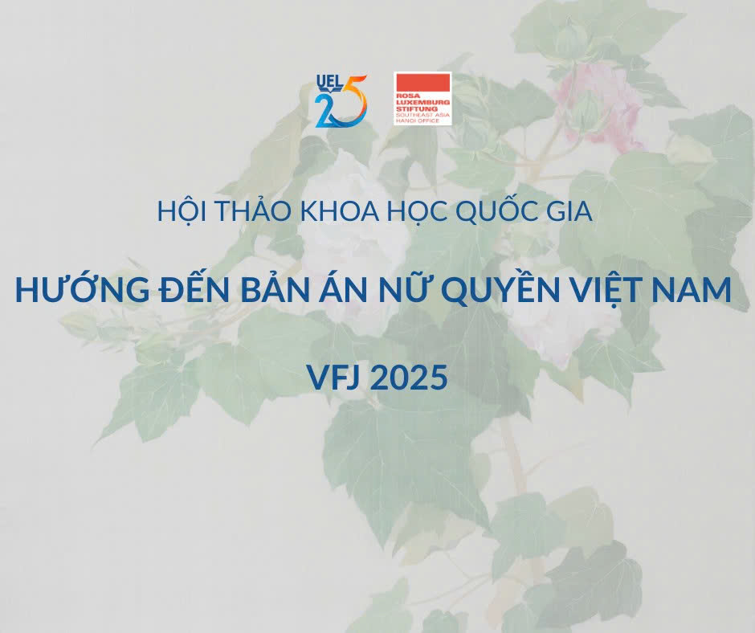

VFJ 2025

The selected judgment to be rewritten and commented upon must be contentious — the case must reveal contradictions in decisions across levels of court, raise a novel legal issue, or contain strong disagreement from the parties, the procuracy, or the adjudicating panel.
Full papers must be between 5,000 and 10,000 words (excluding references), meeting the standards and quality of an international academic publication. The content must be previously unpublished in any form.
Papers may be written in Vietnamese or English.
Authors may choose between two approaches to writing a feminist judgment:
This is the first approach of the Vietnamese Feminist Judgments project, aimed at popularising feminist legal theory as a research framework through applied illustration.
Authors are required to structure their paper as follows:
This approach centres on the rewritten judgment as the primary output, approached through feminist legal theory.
This approach requires two authors — one to write the rewritten judgment and one to write the commentary. This is also the approach adopted by all feminist judgments projects worldwide. The conference encourages this approach to bring the Vietnamese project closer to international parallels.
The paper consists of two parts — the rewritten judgment and the commentary. For the commentary section, authors follow this structure: